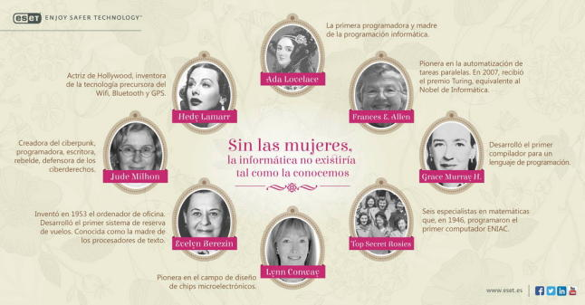

En España, según el último informe de la universidad española, en cifras, sólo hay un 23 % de alumnas estudiando ingenierías y arquitectura
ESET España, empresa pionera en la protección proactiva de malware desde hace más de dos décadas, ha querido reconocer la aportación del género femenino al mundo de la informática.
Mujeres pioneras y luchadoras que trabajaron duro para conseguir hitos, luchando por sus derechos en el mundo de la tecnología, tradicionalmente reservado a los hombres. Aún hoy el número de mujeres que se dedica a esta profesión sigue siendo bajo comparado con otras carreras. En España, según el último informe de la universidad española, en cifras, sólo hay un 23 % de alumnas estudiando ingenierías y arquitectura. En informática, el porcentaje se queda en un 15%. Aunque es cierto que se ha experimentado un crecimiento en los últimos años, el número de expertas en seguridad sigue siendo mínimo comparado con la cantidad de varones que exponen sus investigaciones en conferencias de seguridad en todo el mundo. Pero ¿es la informática un campo ajeno a las mujeres? Por suerte no lo es y, de hecho, la informática -y muchas de las llamadas nuevas tecnologías- no serían lo mismo sin las investigaciones y aportaciones realizadas por las mujeres. Muchas de ellas auténticas pioneras en su campo. En la infografía anexa elaborada por ESET se repasan las trayectorias de las mujeres más influyentes en la informática a lo largo de la historia. No aparecen todas las que son, pero incluso esta pequeña representación sirve para reflejar la importancia que el género femenino ha tenido en el desarrollo tecnológico de las últimas décadas. A pesar del importante peso de la mujer en el desarrollo de la informática, a día de hoy sigue habiendo una grave carencia de mujeres informáticas. Dentro de las ingenierías, informática sigue siendo una de las carreras donde hay un menor ratio de mujeres, algo que agrava la falta de profesionales femeninas en el sector. Por otra parte, su falta de visibilidad y, por ende, la falta de referentes en este campo también es importante según Josep Albors, director del Laboratorio de ESET España. “Muchos de los que hemos estudiado informática lo hemos hecho inspirados por grandes expertos en este sector y la falta de visibilidad que se les ha dado a las mujeres puede que sea un factor importante. Todo el mundo sabe quiénes son Bill Gates o Steve Jobs, pero pocos sabrían decirnos quién es Ada Lovelace, la creadora del primer programa informático de la historia”, explica. Además, las mujeres que deciden estudiar y dedicarse profesionalmente a algunos de los muchos campos que abarca la informática tienen que luchar contra una serie de tópicos establecidos en la sociedad. Quizá el más extendido -y el más falso de todos- es aquel que afirma que a las mujeres no les interesa la tecnología o que mujeres y tecnología no se llevan bien. Tópico que demuestra su falsedad en el uso diario que hacen millones de mujeres de todo tipo de dispositivos tecnológicos. “Esperamos que, con este pequeño homenaje que realizamos desde ESET España, todos reconozcamos la importancia de incluir a ambos géneros en todo tipo de áreas profesionales, terminar con tópicos que no hacen ningún bien a nadie y hacer entre todos una red más segura para que mujeres y hombres puedan disfrutar de la tecnología por igual”, concluye Albors.